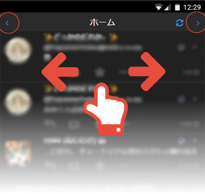

この画面をスクショするか直接見せてあなたのアカウントを簡単に共有することができます。
QRコードは通常のQRコードリーダーアプリ等で読み取ってください。

@
*MarkDownはスワイプメニュー→新規トゥートから使用できます
* インスタンスにより文字数、容量制限が異なりますのでリミットは表示していません。
一部の設定は再起動後に反映されます。
*設定を保存するまでサーバー上に更新されません。
他のインスタンス
(上級者向け)トークンを直接入力してログイン
KnzkAppは、元々Knzk.meのBBCode(文字装飾)をアプリでも見られるように開発されたMastodonクライアントです。
現在では様々なインスタンスの独自仕様に対応しています。
KnzkAppでは、主にタイムラインの下にあるフォームから投稿できます。
このフォームは、黒い部分(本文を入力する部分)をタップする事で細かなボタンが表示されます。ボタンを押すと、それぞれの説明を表示します。
*MarkDownはスワイプメニュー→新規トゥートから使用できます
タイムラインは、左右にスワイプするか、メニューバーの矢印で切り替える事ができます。

その他、お困りの際や新しいアイデアなど、何でもいいのでまあまあ暇な開発者(@y@knzk.me)に質問してみてください。
ボナペトゥート！